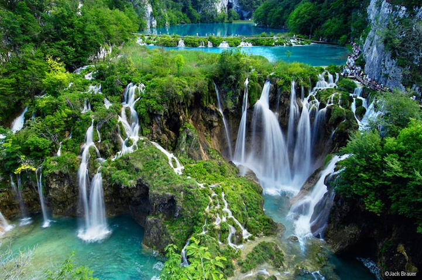

Portrait photography or portraiture in photography is a photograph of a person or group of people that captures the personality of the subject by using effective lighting, backdrops, and poses. A portrait picture might be artistic, or it might be clinical, as part of a medical study. Frequently, portraits are commissioned for special occasions, such as weddings or school events. Portraits can serve many purposes, from usage on a personal Web site to display in the lobby of a business.
Nature photography is a wide range of photography taken outdoors and devoted to displaying natural elements such as landscapes, wildlife, plants, and close-ups of natural scenes and textures. Nature photography tends to put a stronger emphasis on the aesthetic value of the photo than other photography genres, such as photojournalism and documentary photography.
